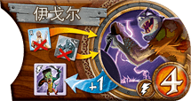

你收集所有在征服中损失的种族代币（失落部落和所有玩家的种族代币，包括你自己的）。在你的回合开始时，这些收集的代币生成新的伊戈代币生成速率为每收集等于游戏玩家数量的代币生成 1 个新伊戈尔。
在 4 人游戏中，4 个收集的代币生成 1 个新伊戈尔代币；在 2 人游戏中，生成 2 个新伊戈尔；在 3 人游戏中，生成 1 个新伊戈尔，剩余 1 个收集的代币供以后使用。在 5 人游戏中，你还需要再收集 1 个代币才能生成 1 个伊戈尔。